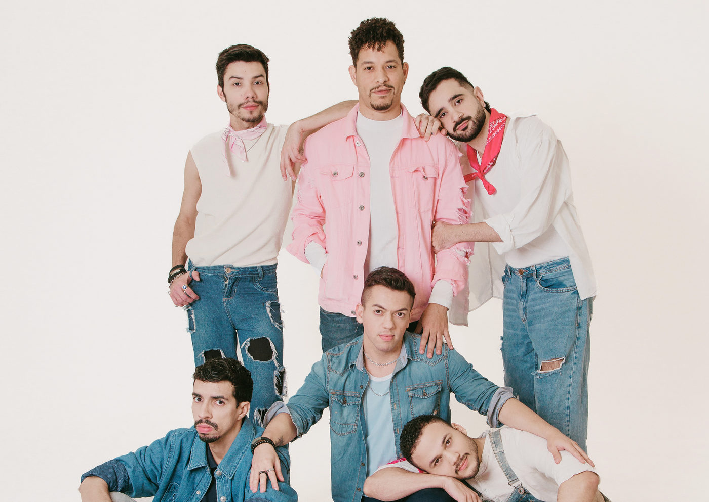

Foto — Halyson Silva
Teatro
Tudo o que nos Cabe estreia em São Paulo e mergulha nas vivências LGBTQIAPN+ com humor, afeto e reflexão
Espetáculo dirigido por Alessandro Barba traz histórias inspiradas em experiências reais do elenco e convida o público a rir, chorar e se reconhecer nos encontr…